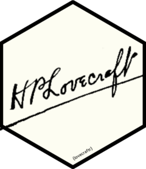

How to Contribute
Source:.github/CONTRIBUTING.md
Contributions, issues, and fixes are welcome!
If making changes to data, this must be done to the raw txt files. The
generate_data.Rscript automates creating the RDA files and accompanying documentation.
Install the
pre-commithooks-
Create a new branch
-
Make your changes
- Run the
generate_data.Rscript if you made changes to the raw txt files or data documentation - Render
README.mdfromREADME.qmdif you made changes to theREADME
- Run the
-
Ensure all {
testthat} tests passdevtools::test() Submit a PR